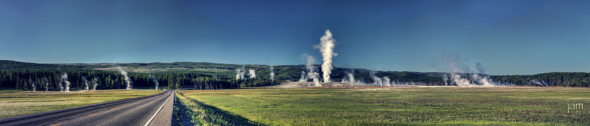
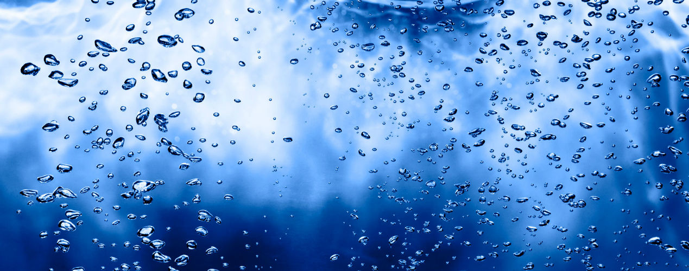
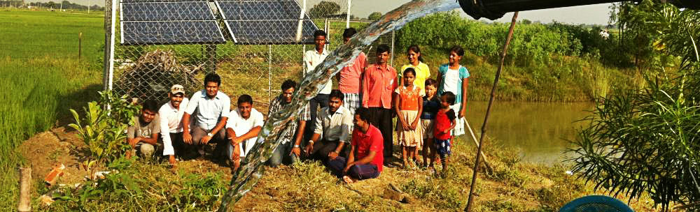

E N A C T U S - L E I C E S T E R
O P E R A T I O N - C H A N D P U R
750 Million people across the world lack access to clean water.
840,000 people die each year from a water related disease.
We passionately believe that access to clean water is a basic human right that we often take for granted.
At Operation Chandpur, we strongly believe that clean water is a right not a privilege. Owing to this, we investigated innovative ways to filter water in developing countries. Additionally, we identified Bangladesh as a country with marked problems of water sanitation. In particular, the problem of arsenic poisoning is widespread throughout the country.
Our goal is to address the issue of arsenic poisoning in Bangladesh, namely, the district of Chandpur.
We are currently developing our own sustainable and recyclable water filter to address this very issue. We also intend to run educational workshops in Chandpur to teach locals the importance of proper sanitation and hygiene.
We are a small group of enthusiastic and determined students, who want to change the status quo of the world and make a real difference.
Watch the video below for more info!
Project Leader Contact Details:
enactusleicesterwater@gmail.com